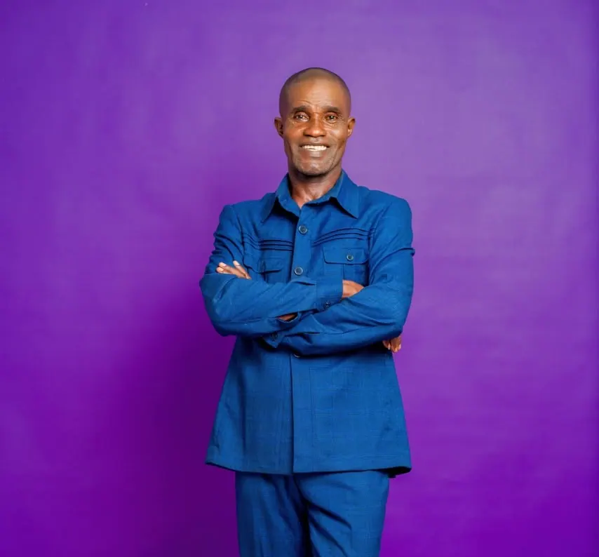

Jeudi 10 décembre 2026 — 10h00
La dot
Espace Dongou Zidane, arrêt Deuxième Terre Jaune, Kintélé.
📍 Ouvrir l’itinéraire dans Google MapsAmour ♥ Engagement ♥ Fidélité ♥ Pour la vie
10 & 12 DÉCEMBRE 2026 • BRAZZAVILLE (KINTÉLÉ & TALANGAÏ) • CONGO
Jeudi 10 & samedi 12 décembre 2026
« Deux cœurs se choisissent, deux familles se rapprochent, une belle histoire continue. »
Chaque jour nous rapproche de notre promesse
Informations pratiques
Trois rendez-vous, une même promesse : célébrer notre amour auprès de ceux qui nous sont chers.
Jeudi 10 décembre 2026 — 10h00
Espace Dongou Zidane, arrêt Deuxième Terre Jaune, Kintélé.
📍 Ouvrir l’itinéraire dans Google MapsSamedi 12 décembre 2026 — 10h00
Mairie de Talangaï, Brazzaville.
📍 Ouvrir l’itinéraire dans Google MapsSamedi 12 décembre 2026 — 12h00
Église Seigneur Jésus-Christ, Brazzaville.
📍 Rechercher l’église dans Google MapsLes souvenirs de notre union
Des premiers préparatifs aux instants partagés, chaque page garde la lumière d’un souvenir.
Deux âmes, une seule histoire
La mariée

Le marié
Deux vies, un amour, une seule histoire à écrire.
Notre album
Cliquez sur une image pour l'agrandir, puis naviguez avec les flèches.
Aucune photo n'est encore rangée dans cette catégorie.
Pour ajouter vos photos, utilisez la page studio.html (ajout depuis cet ordinateur)
ou placez les fichiers dans images/galerie/ puis listez-les dans galerie.js.
Ils étaient là
Notre bonheur grandit encore quand il est entouré de ceux que nous aimons.
Le livre de tous les souvenirs
Un sourire en photo, un mot du cœur, la date d’un instant précieux : offrez-nous un souvenir à garder près de nous.
Laissez-nous un mot
Quelques mots de vous deviendront un souvenir précieux pour nous.
Le montage se fabrique avec les photos de cet appareil. Le film est enregistré sur votre appareil au format vidéo standard (WebM ou MP4 selon le navigateur), partageable sur WhatsApp. La musique choisie est incluse quand le navigateur le permet.
Choisissez une harmonie élégante : elle s'applique tout de suite, partout sur le site, et reste en mémoire sur cet appareil.
Votre assortiment personnel
Conseil : un seul ton principal + le filet doré reste toujours élégant. Pour plus de réglages (fond, surfaces, textes), ouvrez la page Administration.
Seules des harmonies sobres et professionnelles sont proposées.